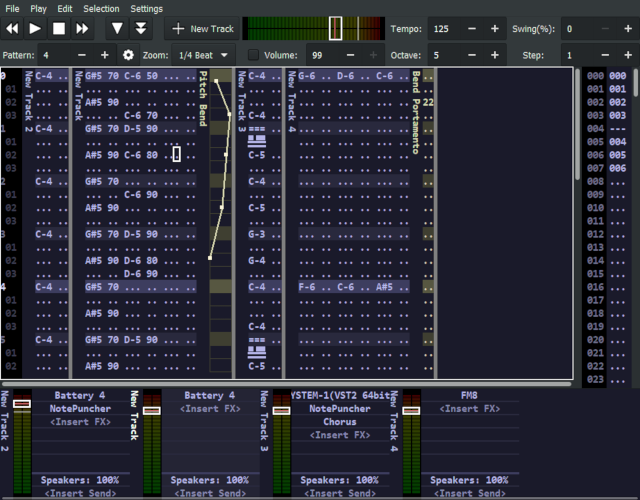

About
ZyTrax is an easy to use music sequencer with an interface heavily inspired by 90's "tracker" software (most specifically Impulse Tracker).
While contemporary software that uses this approach exists, it usually has a high entry barrier because it maintains compatibility with old formats.
In contrast to this, ZyTrax starts afresh with an user friendly approach (no hex numbers, pure plugin-based architecture, inlined automation envelopes, smart automations, zoomable patterns and a simple pattern/orderlist layout).
Modernizing a great paradigm
The approach for creating music with ZyTrax is completely different to standard sequenceers, which are heavily mouse-oriented and/or requiere significant peformance skills to enter notes with a MIDI keyboard.
ZyTrax brings back to life the forgotten arts of pattern-based sequencing, reimagined for the modern times. With it, composers can write music at high throughput compared to conventional means. This is achieved by presenting a simple and clean user interface that is heavily PC-Keyboard oriented.
If you have never used a sequencer, ZyTrax can be a great starting point. Otherwise, it can be an excellent alternative to craft your music.
Supported Platforms
At the time of this writing ZyTrax only runs on Windows and supports 64 bits VST2 plugins. It should compile on X11 and MacOS (it uses GTK), but no plugin support exists at the moment for these platforms.
Download
Keep in mind ZyTrax is still alpha! While it's feature complete for a first release, it may have bugs. If you run into one, make sure to report it to the issue tracker.
The latest version of the software can be downloaded from the GitHub Releases page.
Full source code is available under the permissive MIT license. If you like it and want to contribute, feel welcome to do so!